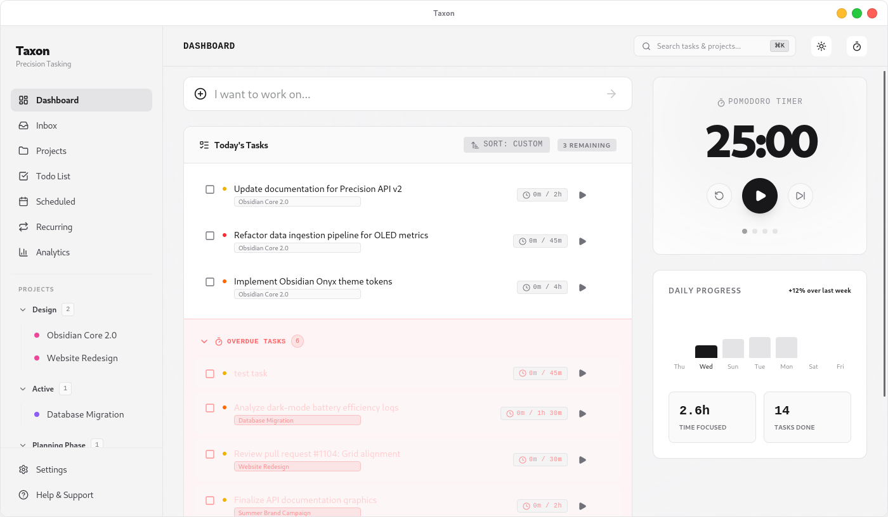
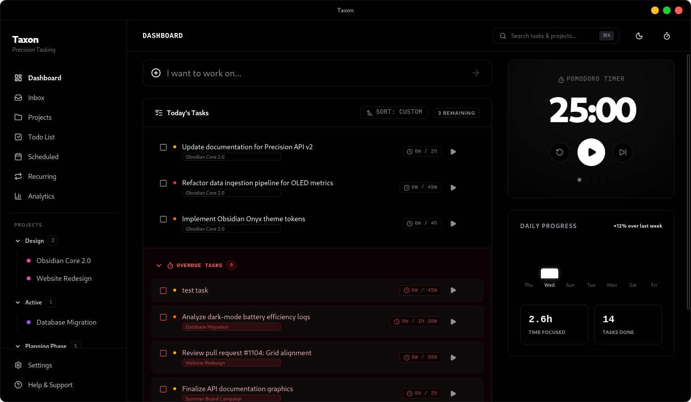

Your Tasks. Your Machine.
Your Rules.
The local-first developer productivity engine. Seamlessly orchestrate tasks, visualize dependency DAGs, and collaborate bi-directionally with AI coding agents — 100% offline on your machine.


Live AI Agent Sync & Workflow DAG
Experience how Taxon bridges Directed Acyclic Graph dependencies with autonomous AI coding agents in real-time.
Precision Engineering for Tasking
Taxon brings together architecture visualization, AI coding agent collaboration, and local-first performance.
AI Agent Live Sync
Bi-directional Markdown sync via .taxon vaults. Collaborate effortlessly with Claude Code, Antigravity, and Cursor with automated git commit hooks and live trajectory tracking.
Interactive Workflow DAG
Automated Directed Acyclic Graph layout powered by Dagre. Group tasks by architectural module, map dependency edges, and eliminate blockers before writing a line of code.
Command Palette (⌘K)
Fly through your projects with instant fuzzy jump (⌘K), quick task capture (/), pinned project hotkeys (Alt+1-9), and rapid sprint/filter toggles without leaving the keyboard.
Minimalist Focus Mode
Distraction-free full-screen workspace with customizable Pomodoro timers, automatic break progression, global hotkeys (Ctrl+Shift+P/S), and a persistent sidebar widget.
30-Day Velocity Analytics
Visualize productivity momentum with smooth bezier accomplishment curves, side-by-side weekly load distributions, completion velocity, and active streak metrics.
Sprint & Multi-View Workspace
Seamlessly toggle between List, Kanban Board, and Workflow Graph views. Manage active sprints, backlogs, milestones, and drag-and-drop status stages effortlessly.
Integrated Document Vault
Organize codebase documentation and notes with an embedded Markdown editor and hierarchical file tree. Link files directly to task cards for instant context.
Recurrence & Calendar Grid
Automate recurring routines on daily, weekly, or custom intervals and plan milestone timelines on an interactive calendar matrix.
Engineered for Modern Developer Workflows
Connect your tasks, architectural dependencies, and AI coding agents in one unified, local environment.
AI Agent Integration
Native .taxon/ sync with automated post-commit hooks.
Keyboard-Driven Speed
Control the entire workspace without touching the mouse.
Local-First. Always.
We believe your productivity tools shouldn't spy on you or break when your internet does.
Your Data, Your Device
Everything is stored locally on your machine. No cloud. No sync. No surveillance.
No Account Required
Start using Taxon instantly — no sign-up, no email, no strings attached.
Offline-Capable
Works without internet. Your productivity doesn't depend on a connection.
Open-Source
Fully transparent codebase. Inspect, modify, and contribute on GitHub.
Cross-Platform
Built with Tauri for Windows, macOS, and Linux. Native performance everywhere.
Zero Network Latency
Lightning fast interactions. No spinning loaders, no API delays, no waiting.